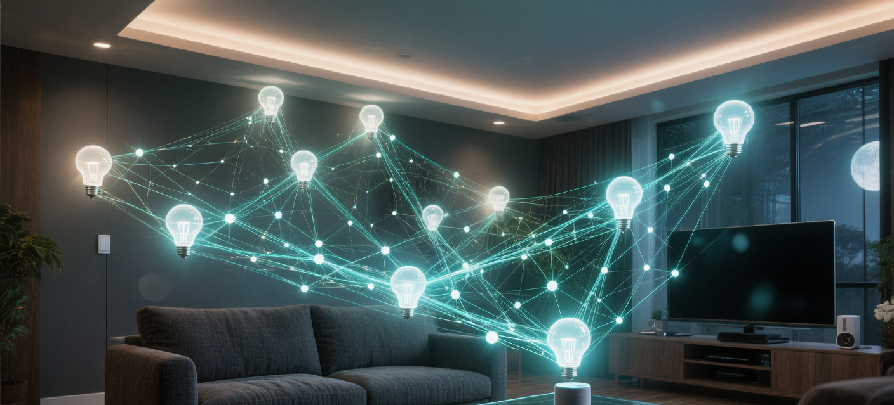
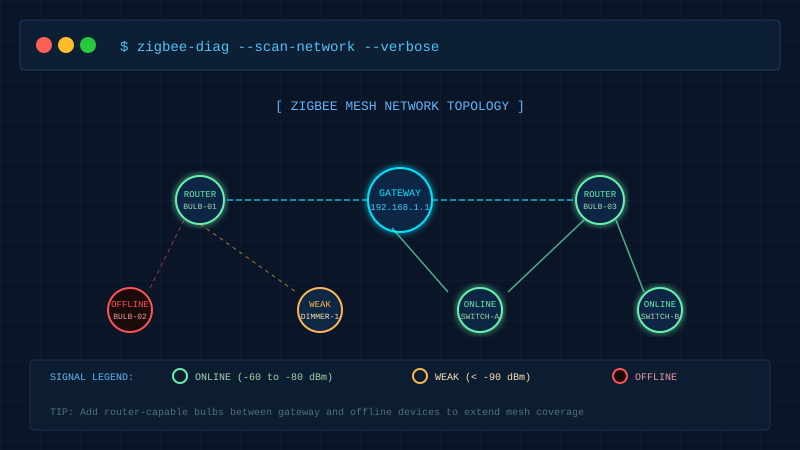
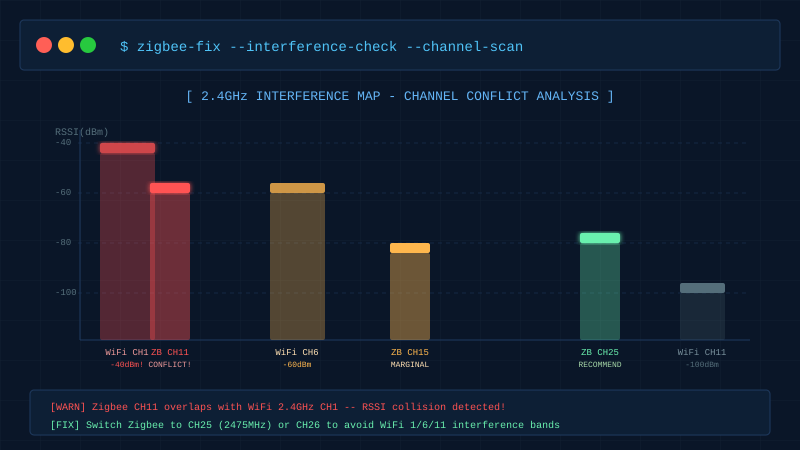
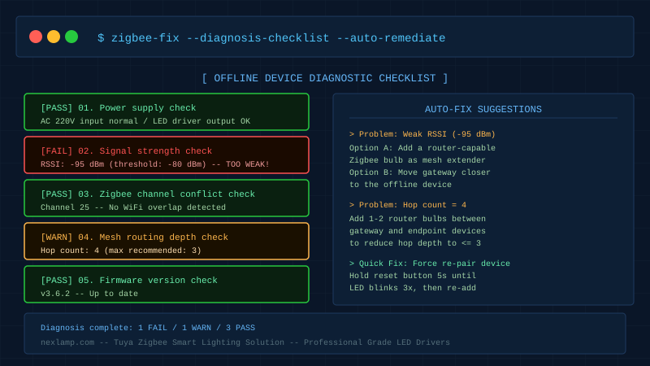

装了一套Zigbee智能灯，结果手机APP里灯具显示"离线"，语音助手喊半天没反应——这个场景你一定不陌生。
知乎、CSDN、各大论坛里，"Zigbee掉线"是智能家居讨论最热的话题之一。涂鸦平台的工程师反馈，超过60%的售后问题都与网络稳定性有关，而这些问题中有90%其实可以自己解决。
本文整理了最常见的5类掉线原因和对应解法，帮你系统性地从根上解决问题。
先理解Zigbee网络的工作原理

Zigbee采用网状（Mesh）组网，设备分三类角色：
- 协调器（Gateway）：网关，是整个网络的"大脑"，负责设备注册和数据转发
- 路由器（Router）：通常是有固定电源的设备（如LED驱动控制的灯具），可以中继信号，覆盖更远的距离
- 终端节点（End Device）：通常是电池供电设备（如遥控器、传感器），只能直连或通过路由器跳一级
关键点：Mesh网络中，每台路由器设备都是信号中继站。网络越"密"，信号越稳定。
第一步：排查信号强度（RSSI值）
这是掉线的头号原因。Zigbee工作在2.4GHz频段，穿墙能力不强，距离一远信号就衰减。
如何查看RSSI：
在涂鸦SmartLife APP中进入"设备信息" → "调试信息"，找到信号强度值。
| RSSI值 | 状态 | 处理建议 |
|---|---|---|
| -60 dBm以上 | 🟢 优秀 | 无需处理 |
| -60 ~ -80 dBm | 🟡 正常 | 正常使用 |
| -80 ~ -90 dBm | 🟠 偏弱 | 建议补强 |
| -90 dBm以下 | 🔴 危险 | 高概率掉线 |
解决方法：
- 缩短距离：将网关移近问题设备，两者之间不要超过2面承重墙
- 增加中继节点：在网关和离线设备之间增加一个有固定电源的Zigbee灯具，让它充当路由器角色
第二步：检查2.4GHz频道冲突

这是最容易被忽略、也是最毁灭性的问题。
Zigbee使用2.4GHz频段的CH11~CH26，而家用WiFi路由器也在同一频段工作。当Zigbee信道和WiFi信道发生重叠，就会产生严重干扰：
| Zigbee信道 | 重叠的WiFi信道 | 风险等级 |
|---|---|---|
| CH11 (2405 MHz) | WiFi CH1 | 🔴 严重冲突 |
| CH14 (2420 MHz) | WiFi CH1/6 | 🟠 中度冲突 |
| CH19 (2445 MHz) | WiFi CH6 | 🟠 中度冲突 |
| CH25 (2475 MHz) | 无重叠 | 🟢 推荐使用 |
| CH26 (2480 MHz) | 无重叠 | 🟢 推荐使用 |
解决方法：
- 登录涂鸦网关管理后台，找到Zigbee信道设置
- 将信道从默认CH11改为CH25或CH26
- 修改后等待2~5分钟，设备会自动重新入网
第三步：检查Mesh网络深度
Zigbee Mesh理论上支持多跳转发，但实际上跳数越多，延迟和掉线风险越高。
超过3跳的链路在压力下容易断联。
典型问题场景：
- 大户型或复式楼只放了一个网关
- 走廊/卫生间灯具全是电池供电设备（无法中继）
- 路由器设备（有源灯具）分布不均，某些区域"信号孤岛"
诊断方法：用APP查看掉线设备的"路由路径"，超过3跳就需要优化。
解决方法：
- 在信号稀薄区域增加1~2个有源Zigbee灯具（如nexlamp的筒灯或射灯），这些灯具内置Zigbee路由功能，会自动加入Mesh网络充当中继节点
第四步：排查LED驱动电源问题

这个原因经常被用户忽视——LED驱动电源质量差，会导致Zigbee模组供电不稳定，进而引发周期性掉线。
常见症状：
- 灯具每隔几小时就掉线一次，重新上电就好
- 某些天气（如夏天高温）掉线更频繁
- 同一批灯具，有些稳定有些掉线
根因：劣质驱动电源在温升或负载变化时，输出电压会偏移，导致Zigbee模组复位重启。
检查方法：
- 用万用表测量驱动电源的12V/24V输出端，稳定灯具的输出电压应在额定值±5%以内
- 掉线灯具的驱动输出如果抖动超过±10%，就是驱动问题
解决方法：更换符合标准的LED驱动电源。nexlamp的涂鸦Zigbee系列配套驱动均通过EMC认证，输出纹波<1%，不会因供电问题导致Zigbee掉线。
第五步：强制重新配对
如果以上排查都没有发现问题，可以尝试强制重新配对：
1. 在APP中删除掉线设备
2. 灯具断电，等待10秒
3. 重新上电，快速开关3次（或长按5秒）直到灯闪烁
4. 在APP中重新添加设备
5. 添加时确保手机靠近设备，入网成功后再移到原位
为什么这样有效？重新配对会让设备重新扫描并选择最优路由路径，解决因网络拓扑变化（如增减其他设备）导致的路由失效问题。
总结：掉线原因速查表
| 症状 | 最可能原因 | 首选解法 |
|---|---|---|
| 特定房间/区域的灯全掉线 | 信号覆盖不足 | 增加中继节点 |
| 随机掉线，重启网关恢复 | 信道干扰 | 切换到CH25/CH26 |
| 整套灯在同一时间掉线 | 网关问题/断网 | 检查网关和网络 |
| 单个灯反复掉线 | 驱动电源不稳定 | 换驱动或重新配对 |
| 新增设备后其他灯变不稳定 | 网络容量/跳数问题 | 优化网络拓扑 |
Zigbee的稳定性本质上是网络规划问题，不是玄学。设备密度合理、信道干净、驱动供电稳定，Zigbee智能灯可以做到几年不掉线。
如果你正在规划新装或改造智能照明，欢迎咨询nexlamp的Zigbee方案——我们提供从LED驱动电源到控制模组的完整解决方案，并提供网络规划建议。
作者：nexlamp技术团队 | 联系：nexlamp.com